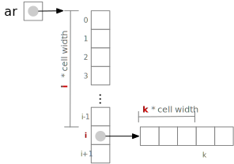

More on Lists, Indexes, and Slices#
You don’t need to understand in detail how Python implements lists. That’s a main purpose of a higher level language: You can use handy data structures provided by the language without thinking (much) about how they work internally. On the other hand, understanding a little bit about how lists are implemented can help you make sense of the costs of list operations. In this section we’ll cover just enough of the implementation of Python lists to distinguish between operations that take constant time and operations that are actually loops.
Python lists are flexible arrays#
The list data structure in Python is like the array data
structure in some other languages including Java and C, or the
vector class in C++. It is implemented as a sequence of
cells in a contiguous area of memory. Why should you care that a
list occupies a contiguous area of computer memory? That is the
key to accessing ar[i] in a constant number of operations, rather
than looping through 0..i cells to find ar[i].
To find ar[i], Python can add the width of i cells to the
location of the beginning of ar. Finding ar[999] takes no
longer than finding ar[2]. If ar is a list of lists, finding
ar[i][k] just requires the same indexing operation twice:

What matters to us when writing loops is that we can treat a
reference to ar[i] or ar[i][k] as a single step,
i.e., a constant time operation.
Several other operations on a list ar are constant time:
len(ar)obtains the current length ofar, which is kept as part ofarso that it can be checked and updated without counting elements.ar.pop()obtains the last element ofarand removes it.
“Removing” it actually means updating the stored length of the array and marking the removed cell as empty.ar.append(x)adds an element to the end ofar. It is not obvious how this can be done in constant time! The trick is thataractually includes some empty cells at the end, not included inlen(ar), so usuallyar.append(x)can use a cell that is already in the memory ofar. Occasionally Python must make a copy ofarinto a larger area of memory, requiring time to copy each element, but it manages these areas in a way that makesappendtake constant time on average.
We have already noted that x in ar is not a constant time
operation. Python implements in by performing a linear search of
ar, checking each element just as you would if you wrote the
linear search loop in Python. We can ignore it only if we can be
very sure that ar will always be small. Usually we can write code
that is clean, readable, maintainable, and also efficient. We
should prioritize clean code over efficiency in most cases where
we cannot have both. Very occasionally, in as little code as
possible, we are forced to choose efficiency.
Some other list operations that require linear time:
a + b: List concatenation creates a new list with lengthlen(a) + len(b), requiring time proportional to the length of the new list.v = ar[i:k]: A list slice creates a new list with a copy of elements in the slice. Its cost is proportional to the length of the slice.ar[i:k] = x[m:n]. In addition to copying elementsmthroughn-1ofx, Python may need to copy all the elements that appear in cells ‘k’ through ‘len(ar) - 1’. For example, ifaris['alpha', 'beta', 'gamma', 'delta']and we assignar[1:3] = ['yi', 'er', 'san']. After the assignment,aris['alpha', 'yi', 'er', 'san', 'delta']. Notice that in addition to inserting the values['yi', 'er', 'san'], Python had to copydeltato a new position after the inserted elements.min(ar),max(ar),sum(ar),ar.count(x),ar.index(x):
These are all sequential loops that take time proportional to the length ofar.
The cost of sorting a list is log linear in the length of the list, a little more than linear. Sorting can often be used to simplify an algorithm, and may be appropriate even when it is not the absolute fastest way to obtain the needed result, but we should be aware of the cost.
We have not used the zip function in this text, but you may have
encountered it on your own.
a = [1, 2, 3, 4]
b = ['w', 'x', 'y']
for x,y in zip(a,b):
print(f"{x} -> {y}")
1 -> w
2 -> x
3 -> y
zip is surprisingly cheap. You might
expect the cost of zip(a,b) for lists a and b to be
proportional at least to the length of the shorter of the two lists.
Instead, zip is a constant time operation. It does not construct
a new list of pairs, but rather constructs each pair lazily, on
demand. This can be very handy when we want to iterate through two
lists together. However, because it does not construct a new list
in memory, we cannot index the object constructed by zip.
z = zip(a,b)
print(z[0])
---------------------------------------------------------------------------
TypeError Traceback (most recent call last)
Cell In[2], line 2
1 z = zip(a,b)
----> 2 print(z[0])
TypeError: 'zip' object is not subscriptable
Note
zip is an example of the way Python can support a more
functional style of programming. The functional style involves
more than defining and using functions. It involves treating
functions as objects that can be combined and applied in various
ways, including functions that act on other functions,
often in preference to changing other kinds of values.
Later, if you
continue using and building expertise in Python and wish to
explore the functional style, you may wish to
familiarize yourself with
the functools module. If you continue
to pursue computer science and learn a variety of programming
languages, you are likely to encounter some
(Haskell, for example) that are
particularly designed for the functional style. You may also
encounter frameworks in other languages, like
React for JavaScript, based on functional
programming principles.
The string type#
A string (type str) is not the same as a list, but it is
implemented in a similar way (the characters of the string occupy a
contiguous region of memory) and has similar performance
characteristics. In particular:
len(s)ands[i]are constant time operationss + tis a linear time operation, i.e., its cost is proportional to the sum oflen(s)andlen(t), because it copies bothsandtinto a new region of memory to create a new string. This is important when you want to build a string in a loop. Often it will be faster to build a list and then convert it to a string all at once with thejoinmethod.The cost of using
s[i:k]is proportional tok - i.t in sis a sequential search with cost proportional tolen(s)(even whenthas multiple characters, thanks to a very cool algorithm that you may encounter later in an algorithms course).Most of the other operations specific to strings (e.g.,
strip,lower, etc) work just about how you imagine they do, and require time proportional to the length of the string they are applied to.
A particularly important Python idiom is using the join method to
construct a string from a list built within a loop. For example,
don’t do this:
def ungap(s: str) -> str:
"""Returns a copy of s with sequences of spaces collapsed.
WRONG WAY TO DO THIS.
"""
result = ""
prior_space = True
for ch in s:
if ch == " ":
if not prior_space:
result += ch
prior_space = True
else:
prior_space = False
result += ch
return result
was = "This string is way spacy"
print(ungap(was))
This string is way spacy
The cost of the join method is linear in the length of the string
it constructs. We can place it outside the loop in the code above
to improve the overall cost of ungap from quadratic in the
length of s to linear in the length of s:
def ungap(s: str) -> str:
"""Returns a copy of s with sequences of spaces collapsed.
Linear time version.
"""
result = []
prior_space = True
for ch in s:
if ch == " ":
if not prior_space:
result.append(ch)
prior_space = True
else:
prior_space = False
result.append(ch)
return "".join(result)
was = "This string is way spacy"
print(ungap(was))
This string is way spacy